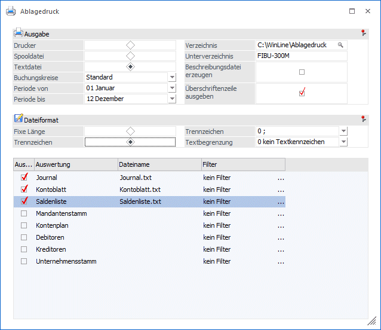
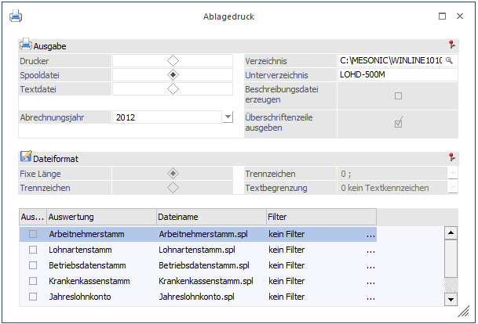
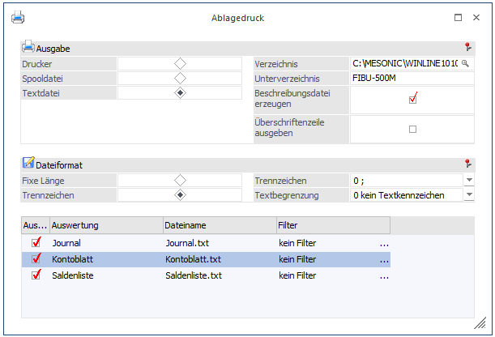
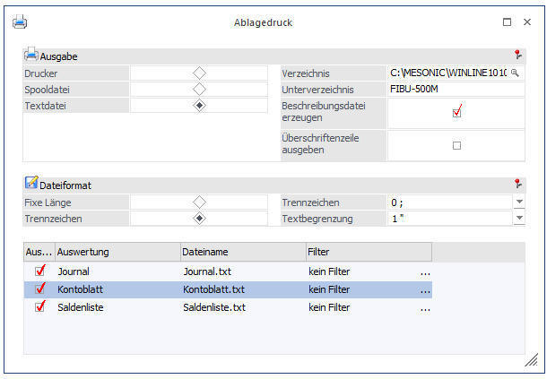
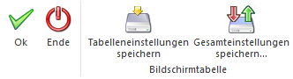

In den diversen Programmen werden einige Auswertungen immer wieder für die Ablage ausgedruckt. Diese Auswertungen können in weiterer Folge auch für eine Steuerprüfung verwendet werden. Um diesen Vorgang zu erleichtern gibt es in den Programmen WinLine FIBU, WinLine LOHN und WinLine ANBU im Programmpunkt…
1 Auswertungen
1 Ablagedruck
… die Möglichkeit, diese Ausdrucke zu standardisieren und sie wahlweise auf Drucker, auf Spool-Datei oder als Text-Datei auszugeben.
Ablagedruck aus WinLine FIBU angewählt:

Ablagedruck aus WinLine LOHN-D angewählt:

Ø Ausgabe
Hier kann eingestellt werden, auf welche Art die Ausgabe erfolgen soll. Dabei stehen folgende Optionen zur Verfügung, wobei es von der Ausgabe abhängt, welche zusätzlichen Optionen gewählt werden können:
ü Drucker
Die Ausgabe erfolgt auf
Drucker.
ü Spooldatei
Die Ausgabe erfolgt
in eine mesonic-formatierte Datei.
ü Textdatei
Die Ausgabe kann in
eine Textdatei erfolgen, wobei Trennzeichen oder eine fixe Länge verwendet
werden können. Die Textdateien können auch als Grundlage für eine Prüfung
verwendet werden.
Ø Verzeichnis
Erfolgt die Ausgabe auf Spool- oder auf Textdatei, dann werden die Dateien in ein eigenes Verzeichnis abgelegt, damit sie leichter gefunden werden können. Beim ersten Aufruf wird das Programmverzeichnis + Ablagedruck\ angezeigt. Dieses Verzeichnis kann über den Explorer-Button ausgewählt werden. Wird es manuell eingetragen, so muss auch beim letzten Verzeichnis ein \ angegeben werden. Der Pfad wird je Mandant, Wirtschaftsjahr und Applikation gespeichert und bei erneutem Aufruf wieder angezeigt.
Ø Unterverzeichnis
Unterhalb des hinterlegten Verzeichnisses wird ein weiteres Unterverzeichnis angelegt. Hier wird automatisch "Programm-Mandant" vorgeschlagen. In dieses Verzeichnis werden dann alle erzeugten Dateien abgelegt.
Ø Beschreibungsdatei erzeugen
Diese Checkbox kann nur bei Ausgabe auf Textdateien ausgewählt werden. Damit wird eine Datei in XML-Format erzeugt, die den Inhalt bzw. den Aufbau der erzeugten Textdateien erläutert.
Ø Überschriftenzeile ausgeben
Mit dieser Option kann gesteuert werden, ob in der Textdatei eine Überschriftenzeile mit ausgegeben wird oder nicht.
Ø Buchungskreise
Der Ablagedruck kann auf Buchungskreise eingeschränkt ausgegeben werden.
Ø Periode von / Periode bis
Für das Journal, Kontoblatt und Saldenliste kann eine Periodeneinschränkung vorgenommen werden.
Nur für WinLine FIBU:
Beim Ablagedruck in der WinLine FIBU wird bei Ausgabe in "Textdatei" zusätzlich eine Datei "Wichtige Hinweise für den Prüfer.pdf" im Ausgabeverzeichnis erzeugt, welche folgenden Text enthält:
Wichtige Hinweise für den Prüfer
Ist in der Spalte Gegenkonto der Kontoblatt.txt statt eines Kontos eine 0 enthalten, so können die Gegenkonten über die Querverbindung, wie folgt beschrieben, beleglos geprüft werden:
In der Ausweisungszeile der Kontoblatt.txt, in welcher sich das Gegenkonto = 0 befindet, muss die Buchungsnummer herausgefiltert werden, um anhand dieser Buchungsnummer in der Journal.txt die Gegenkonten aufgezeigt zu bekommen.
Nur für WinLine Lohn:
Ø Abrechnungsjahr
Im WinLine LOHN (Österreich und Deutschland) gibt es eine zusätzliche Auswahllistbox, aus der das Abrechnungsjahr gewählt werden kann, für das der Ablagedruck durchgeführt werden soll. Es werden alle Jahre zur Auswahl vorgeschlagen, für die Abrechnungen vorhanden sind.
Dateiformat
Das Dateiformat kann nur dann eingestellt werden, wenn die Ausgabe auf Textdatei erfolgt, wobei folgende Optionen möglich sind:
Ø Fixe Länge
Wird diese Option gewählt, wo werden die einzelnen Felder mit einer fixen Satzlänge (mit der max. Anzahl der Stellen, mit der sie auch in der Datenbank hinterlegt sind) ausgegeben. Die einzelnen Felder sind mit Tabulatoren getrennt.
Ø Trennzeichen
Wird diese Option gewählt, dann wird die Datei mit Trennzeichen ausgegeben, wobei die Art des Trennzeichens über die Auswahllistbox
Ø Trennzeichen
gesteuert werden kann. Dabei stehen die Trennzeichen ; (Semikolon) , (Komma) und Tabulator zur Verfügung. Zusätzlich dazu kann über das Feld
Ø Textbegrenzung
Definiert werden, ob eine Textbegrenzung durchgeführt werden soll. Hier stehen die Optionen keine, " (Hochkomma) oder " (einfaches Hochkomma) zur Verfügung. Die Ausgabe der Daten mit Textbegrenzung sorgt dafür, dass Textblöcke eindeutig gekennzeichnet werden.
Beispiel
Im Buchungstext wird ein Komma verwendet. Wird nun das Buchungsjournal als Textdatei mit Komma als Trennzeichen und ohne Textkennzeichen ausgegeben, dann verändert das Komma im Text die Satzstruktur.
Ø Drucken
In der Tabelle werden jeweils die Auswertungen angezeigt, die ausgegeben werden können. Dabei stehen für die unterschiedlichen Programme auch unterschiedliche Auswertungen zur Verfügung:
WinLine FIBU
ü Journal
ü Kontoblatt
ü Saldenliste
Zusätzlich bei Ausgabe in eine Textdatei:
ü Mandantenstamm
ü Kontenplan
ü Debitoren
ü Kreditoren
ü Unternehmensstamm
WinLine LOHN - Österreich
ü Arbeitnehmerstammblatt
ü Lohnartenliste
ü Betriebsstammliste
ü Krankenkassenliste
ü Finanzamtsstammliste
ü Jahreslohnkonten
ü Abgerechnete Lohnarten
WinLine LOHN - Deutschland
ü Arbeitnehmerstamm
ü Lohnartenstamm
ü Betriebsdatenstamm
ü Krankenkassenstamm
ü Jahreslohnkonto
ü Abgerechnete Lohnarten
WinLine ANBU
ü Anlagenstammblatt
ü Anlagenspiegel
Ø Auswahl
Durch Aktivieren der entsprechenden Checkbox "Auswahl" werden die einzelnen Einträge zur Ausgabe selektiert.
Ø Dateiname
Wenn die Auswertung auf Spool-Datei oder auf Textdatei erfolgt, und die Auswertung auch selektiert wurde, dann kann auch der Dateiname verändert werden, wobei als Standardvorschlag immer der Auswertungsname + die entsprechende Erweiterung (SPL bei Ausgabe auf Spooldatei, TXT bei Ausgabe auf Textdatei) genommen wird.
Ø Filter
Wenn in den Programmpunkten, über die die Auswertungen normalerweise gemacht werden, Filter hinterlegt wurden, so kann aus der Auswahllistbox der gewünschte Filter hinterlegt werden. Eine Neuanlage von Filtern kann hier nicht durchgeführt werden.
Durch Anklicken des OK-Buttons werden die Auswertungen der Reihe nach gemäß den Einstellungen durchgeführt. Die zuletzt vorgenommenen Einstellungen werden benutzer- und programmspezifisch gespeichert und beim nächsten Aufruf des Menüpunktes wieder so vorgeschlagen.
Achtung
Je nach Einstellung kann die Auswertung einige Zeit in Anspruch nehmen.
Hinweis zur Dateierstellung in WinLine Fibu für Deutschland:
Es wird empfohlen, eine der beiden nachfolgenden Einstellungen zu verwenden, wenn die Daten aus WinLine FIBU über den Ablagedruck zur Prüfung abgegeben werden sollen.
ü die Überschriftenzeile wird nicht ausgegeben - diese Einstellung ist notwendig, da sonst die Überschriftenzeile beim Einlesen wie ein eigener Datensatz behandelt wird - und
ü Dateiformat Trennzeichen und Trennzeichen ; (Semikolon) und Textbegrenzung 0 (kein Textkennzeichen)

ODER
ü die Überschriftenzeile wird nicht ausgegeben (siehe oben) und
ü Dateiformat Trennzeichen und Trennzeichen ; (Semikolon) und Textbegrenzung " (Anführungszeichen)

Buttons

Ø Ok
Durch Drücken des Buttons "Ok" bzw. der Taste F5 wird die Ausgabe der Dateien bzw. der Ausdruck gestartet.
Ø Ende
Mit dem Button "Ende" bzw. der Taste ESC kann das Fenster geschlossen werden.
Ø Tabelleneinstellungen speichern
Die Spalten einer Tabelle können grundsätzlich an beliebige Positionen verschoben, bzw. in der Breite entsprechend angepasst werden. Durch Anwahl des Buttons "Tabelleneinstellungen speichern" werden die Einstellungen benutzerspezifisch gespeichert und bei dem nächsten Aufruf des Programmpunktes wieder vorgeschlagen.
Ø Gesamteinstellungen speichern
Im Gegensatz zu "Tabelleneinstellungen speichern" können mit "Gesamteinstellungen speichern" mehrere Tabellenaufbauten gespeichert und nach Wunsch geladen werden. Zusätzlich werden Sonderfunktionen der Tabelle (z.B. "Spalte gruppieren") ebenfalls bei der Speicherung bedacht.